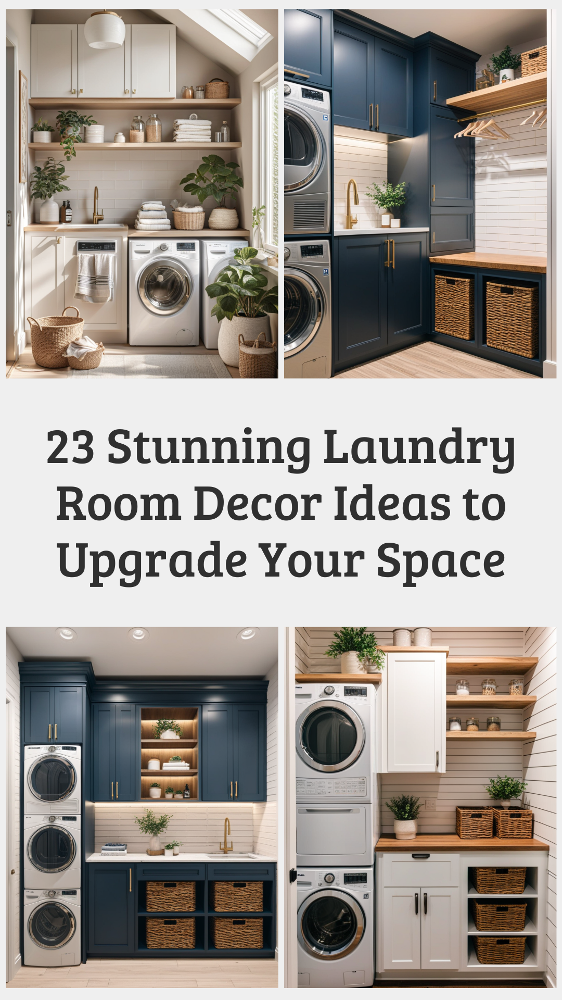
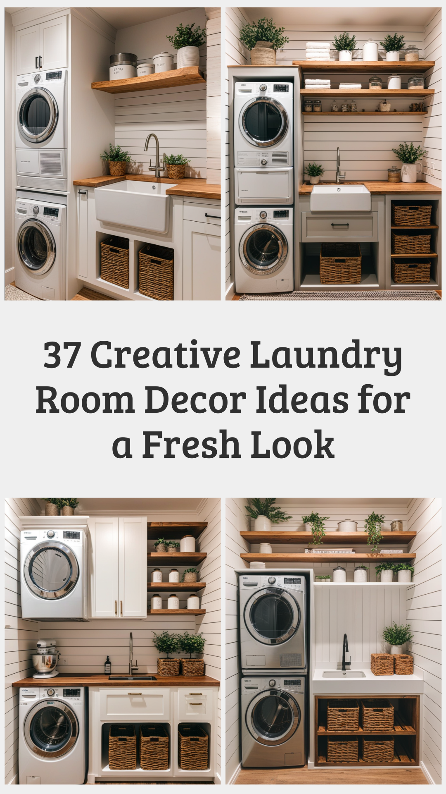
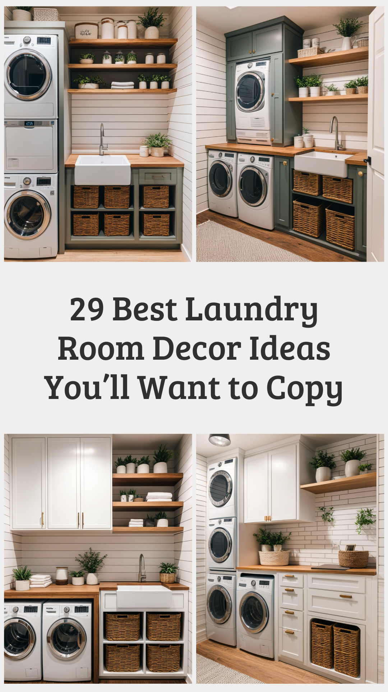
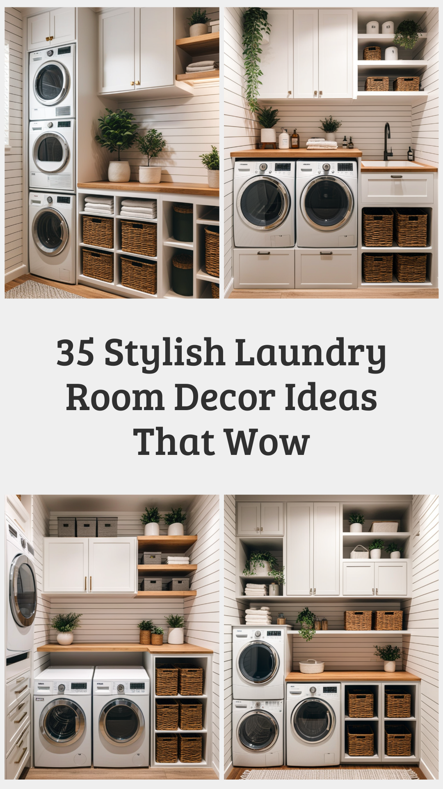

A laundry room is more than just a space for washing clothes; it can be an organized, stylish, and efficient part of your home. With thoughtful design and creative laundry room decor ideas, you can turn this often-overlooked area into a functional and inviting space. Whether you have a spacious laundry room or a compact nook, these innovative ideas will help you maximize style and efficiency.
Color plays a vital role in setting the mood of a space. Light and airy colors like whites, pastels, and soft grays create a clean and refreshing atmosphere. For a bolder statement, consider deep blues, greens, or even patterned wallpaper to add personality to your laundry room.
Keeping your laundry room tidy is essential for efficiency. Use wall-mounted shelves, cabinets, and baskets to store detergents, fabric softeners, and other essentials. Floating shelves can help you utilize vertical space while maintaining an open and organized look.
A countertop over your washer and dryer provides a convenient surface for folding clothes. Choose durable materials like quartz, wood, or laminate to ensure longevity and style. If space allows, add a small island for extra workspace and storage.
Good lighting is crucial in a laundry room. Opt for bright overhead lighting for general illumination and under-cabinet lighting to enhance visibility in work areas. Pendant lights or decorative fixtures can add a touch of elegance to the room.
Adding personal touches can make your laundry room feel more inviting. Consider framed artwork, decorative signs, or plants to bring warmth and character to the space. A stylish rug or floor mat can also add comfort and color to your laundry area.
For small laundry rooms, space-saving solutions are essential. Use a wall-mounted drying rack, foldable ironing board, or stackable appliances to maximize functionality. Sliding barn doors or pocket doors can also help conserve space while adding a modern touch.
If you have the space, a utility sink can be a great addition to your laundry room. It’s perfect for hand-washing delicate items, treating stains, or even cleaning household items. Opt for a farmhouse-style sink for a trendy and practical upgrade.
Labels can help maintain an organized laundry space. Label storage bins, jars, and containers to keep supplies easily accessible. Chalkboard labels or stylish printed tags can add a decorative and functional touch.
Modern appliances with smart features can make laundry tasks easier. Consider energy-efficient washers and dryers with app-controlled settings, automatic detergent dispensers, and steam functions. A motion-sensor light or smart speaker can also enhance convenience.
If your laundry room is large enough, consider incorporating additional features like a pet-washing station, sewing corner, or mudroom storage. This allows the space to serve multiple purposes, making it even more valuable to your home.
Transforming your laundry room with stylish and practical decor can make everyday chores more enjoyable. By incorporating these laundry room decor ideas, you can create a space that is not only functional but also aesthetically pleasing. Whether you prefer a modern, rustic, or minimalist style, thoughtful design choices can turn your laundry area into a beautiful and efficient part of your home.
   